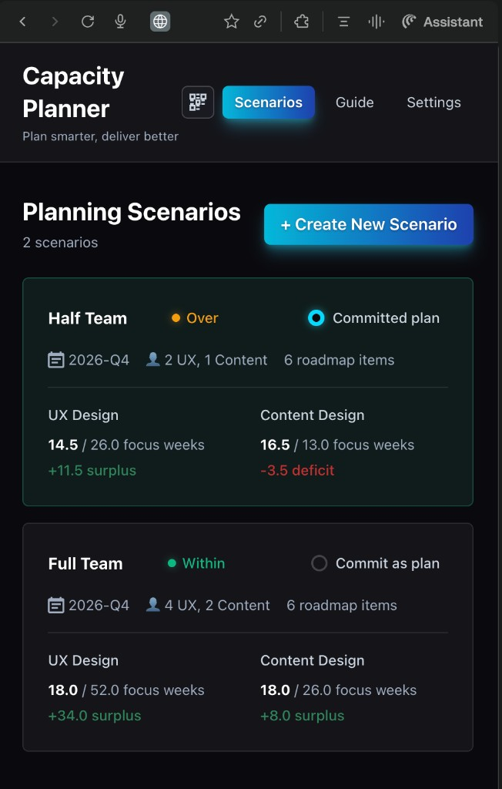
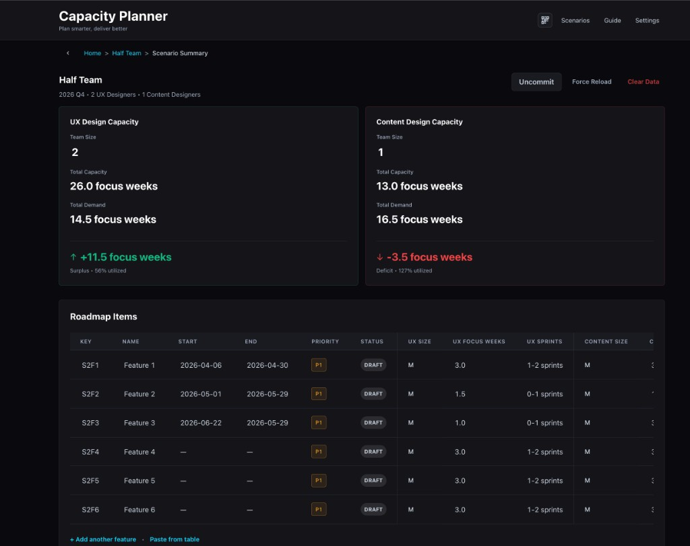

A scenario-based planning tool for Design Program Managers and design leaders — solo designed and developed, end to end. It packages three SHE stories (situation, hindrance, effect), ships as a fully functional product, and gives teams a shared language for capacity versus roadmap demand.

DPMs · Design Leaders
Systematizing subjective capacity
For general audiences — DPMs, design leaders, and hiring managers focused on product thinking and UX process.
Story 1 · Systematizing subjective capacity
Situation
I built a capacity-planning web app as a solo designer-developer for Design Program Managers and design leaders who needed a clearer, shared way to see design capacity versus roadmap demand.
Hindrance
Capacity planning was highly subjective — different designers sized work differently, leaders had limited roadmap detail, and it took multiple conversations with multiple stakeholders just to explain a single capacity problem. Teams had no consistent, measurable way to show how big a roadmap really was compared to what their designers could actually take on.
What I did
I structured the app around scenarios so leaders can copy, tweak, and compare different futures in minutes — like “one designer vs. three” or “full roadmap vs. reduced scope” — instead of rebuilding everything from scratch. A dashboard surfaces capacity challenges visually so the tension between capacity and demand is obvious without long explanation. I made the roadmap editable inline with bulk copy-paste, responding directly to feedback that manually re-entering similar roadmaps was too arduous. I worked with design and content leadership to define adjustable weights — shared criteria that size scope — so the tool standardizes how projects are estimated across teams.
Effect
Spinning up and comparing scenarios is now as simple as copying and pasting, and teams are beginning to talk about capacity using the same language. The Head of Design Ops noted it creates consistency across multiple teams in how we size roadmaps — and it opens the door for executives to see a top-level view of capacity versus demand across all of design.

Why scenario cards?
Each card surfaces the key signals — team size, focus weeks, surplus or deficit — so leaders can evaluate a “what if” without building a new spreadsheet. The goal is to make a capacity argument in a single screen rather than across three Slack threads.
Copy & paste from table — bulk-add roadmap items directly from a spreadsheet; no re-entry required.
Adjustable weights — teams tune the sizing model to their criteria so estimates stay consistent and defensible.
Design Ops · Program management
Making invisible work visible
For design operations and program management audiences — people who understand the pain of advocating for headcount.
Story 2 · Making invisible work visible
Situation
Design teams were consistently over-committed but couldn’t articulate why in terms leadership understood. Headcount asks were met with skepticism because there was no shared, data-backed picture of where time actually went.
Hindrance
The work that consumed designer bandwidth — reviews, feedback rounds, context-switching, unplanned requests — didn’t show up in any roadmap. Leaders saw the project list and assumed there was room. The invisible overhead was the real capacity killer.
What I did
I built the tool to account for focus time vs. overhead so that “available capacity” reflects real productive hours, not calendar hours. The weight system lets teams encode the hidden cost of complexity — a project with five stakeholder reviews consumes more than one with a single approver. The dashboard makes this visible at a glance.
Effect
For the first time, teams could show leadership a realistic picture of load — not just a list of projects, but a picture that includes the invisible work. This shifted conversations from “can you squeeze this in?” to “what should we deprioritize to make room?”
Technical · Build-to-learn
Prototyping to validate at enterprise speed
For technical and product-minded audiences — people who appreciate the build-to-learn approach.
Story 3 · Prototyping to validate at enterprise speed
Situation
The organization needed a capacity planning solution, but enterprise tools were expensive, rigid, and would take months to evaluate. I proposed building a working prototype to test assumptions before committing to a platform.
Hindrance
No engineering resources were available. No budget for prototyping. The only option was to build it myself — fast enough to be useful, polished enough to earn trust from leadership.
What I did
Using Cursor and modern web tools, I designed and developed a fully functional capacity planner in days, not months. The app includes scenario management, inline editing, weighted scoring, and visual dashboards. I iterated based on real user feedback from DPMs and design leads — adjusting the data model, adding bulk paste, and refining the UI based on actual usage patterns.
Effect
The prototype became the working tool — not a throwaway demo. It validated the core concept quickly enough that leadership could make informed decisions about enterprise investment based on real usage data rather than vendor pitches. The build-to-learn approach saved months of evaluation time.